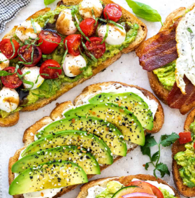
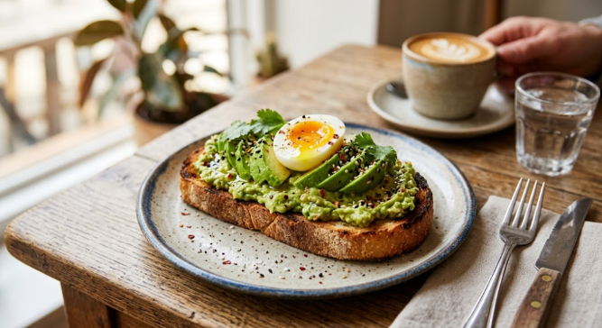
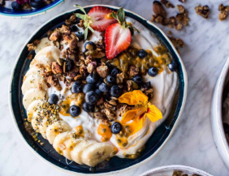
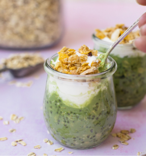
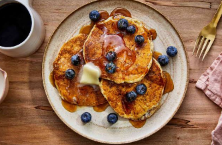
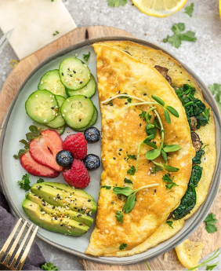
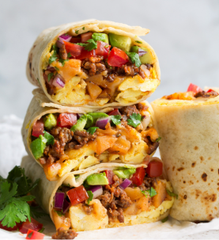
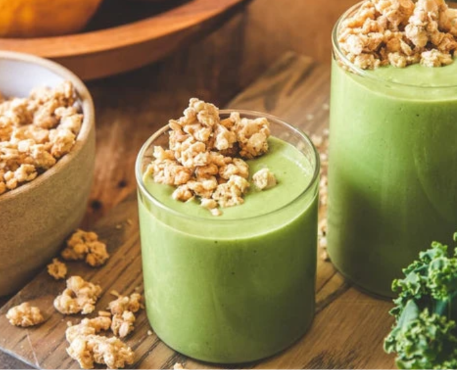
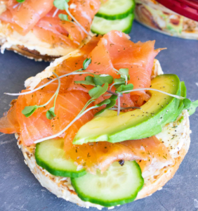
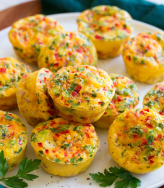

The Perfect Avocado Toast
A classic student staple that never fails. Loaded with healthy fats, fiber, and topped with a perfectly cooked egg to keep you full through your morning classes.
View RecipeAll Recipes

Avocado Toast
Smashed avocado on whole grain bread with chili flakes and lime.
View Recipe
Berry Yogurt Bowl
Greek yogurt topped with mixed berries, granola, and a drizzle of honey.
View Recipe
Matcha Overnight Oats
Prepare tonight, enjoy tomorrow. Rolled oats infused with matcha green tea.
View Recipe
Banana Pancakes
Simple 3-ingredient pancakes made from overripe bananas and eggs.
View Recipe
Veggie Omelet
Protein-packed eggs folded over spinach, tomatoes, and a sprinkle of cheese.
View Recipe
Breakfast Burrito
A portable feast of scrambled eggs, beans, and salsa wrapped in a warm tortilla.
View RecipeSTUDENT FAVORITES

Green Power Smoothie
Drink your greens on the way to class.

Loaded Breakfast Bagel
Cream cheese, cucumber, and smoked salmon.

Egg Muffins
Bake once, eat protein all week.